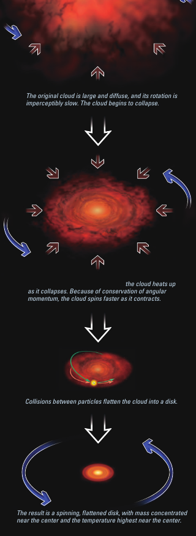
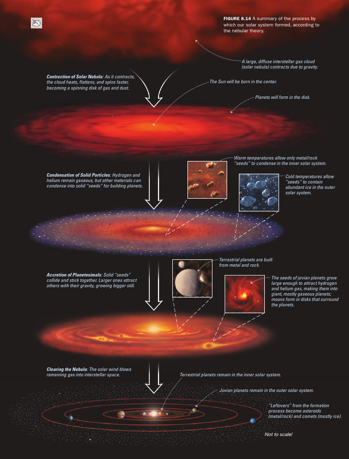
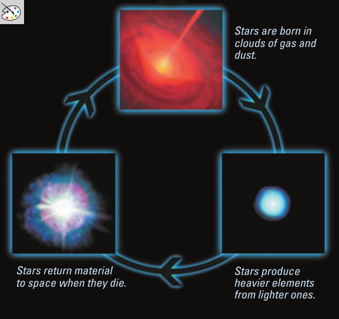
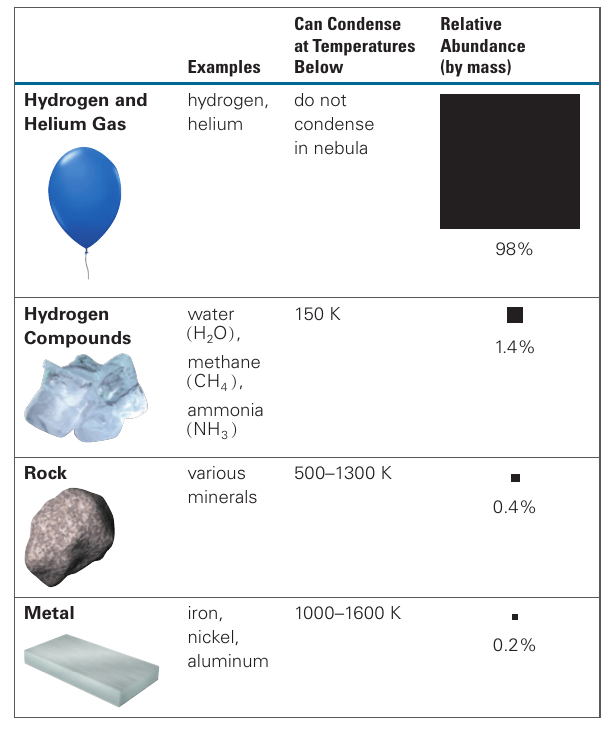
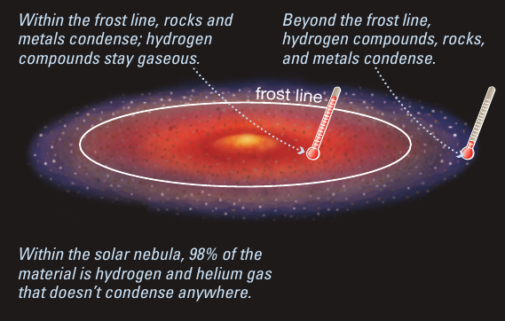
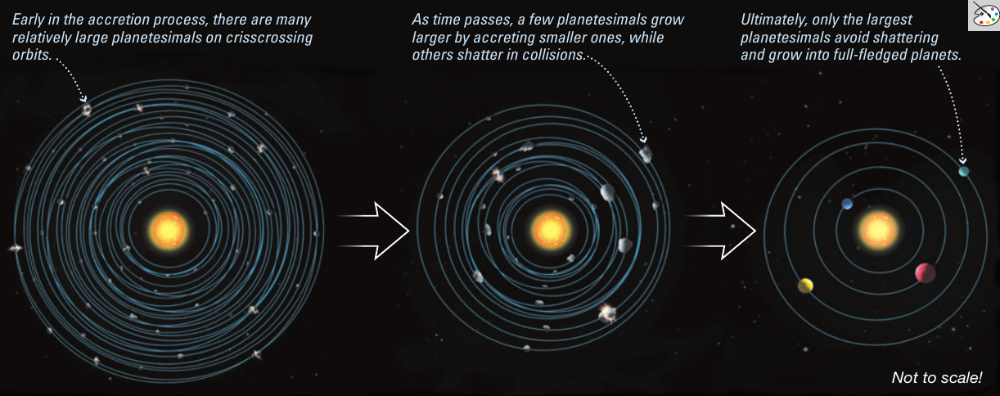
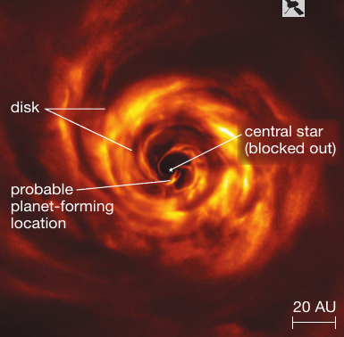
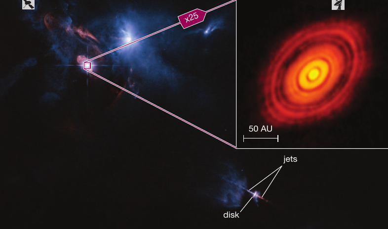

Reading: Chapter 8
TODO Recap
- properties of solar system that a formation model needs to explain
- rocky and gaseous planets
- asteroids, Kuiper belt, Oort cloud
- allows for individual variations
- overall motion
Competing hypothesis for the formation of the Solar System
By the late 18th century, the orbital motion of planets was well understood, predictable with Kepler's laws explained by Newton's Universal Gravitation law. This lead scientists and philosophers to reframe questions on the origin of Earth, planets, and the solar system in a quantitative and scientific form.
Any model of the formation of the Solar system needed to explain:
- the kinematics of the planets, i.e., how they move along their orbit and how they spin along their axes
- the existence of two separate classes of planets (rocky and gas giants)
- the presence of minor bodies (asteroids, moons)
and allow for "exceptions" (e.g., Uranus tumbling, that is its rotation axis being almost perpendicular to the axis of its orbit around the Sun).
For most of the 1800s two main competing theories were considered
Capture
This idea was based on the distribution of planets around the Sun.
Because of the striking difference in size and composition of planets as one crosses the asteroid belt, people thought that maybe the outer planets from the System were captured in a fly-by passage where the Sun grazed another stellar system and grabbed those planets.
This idea however always faced some challenges:
- why would the orbits of planets captured in such a dynamical event be all very close to be circular and coplanar? (the eccentricities of planets orbits are small, meaning the ellipses are very close to circles)
- the typical distance between the Sun and any other star is very large (∼ pc ≅ 4 light years or larger), so it is unclear when/how the Sun could get sufficiently close to another star to "steal" planets from it
- it does not address how the planets formed around the other star before the Sun "stole" them
Because of these issues, this "capture" model has been progressively abandoned. Nevertheless, dynamical encounters between solar systems can and do occur elsewhere in the Galaxy (for example in clusters, where the density of stars is much higher)!
N.B.: Very often in astrophysics even "wrong" ideas (in the sense that they are not an accurate description of what they were meant to describe) can actually be accurate models for different situations! Exchange of stars/planets because of close encounters are a key process in the evolution of stellar clusters, even if they were probably not important for the formation of the solar system!
Nebular hypothesis
Immanuel Kant in the late 1700s first proposed that maybe the Sun and the planets all formed from a single cloud of material (nebula is the latin for cloud). While Kant's philosophical work is important and influential, he was not a very good scientist or mathematician, and this proposal was re-invented independently by Pierre Simon de Laplace a few decades later.

Note that this is before spectroscopical investigation of the chemical composition of the Sun and planets – so they did not have to worry about the fact that the Sun is mostly made of hydrogen and helium while Earth is made of mostly rocky metals! However, it turns out that this can be explained (see below).
Note also how these idea had to be developed with only one solar system to use as inspiration. This situation has dramatically changed since the discovery of exoplanets, first around a "dead star" in 1993, and then around "normal stars" throughout the rest of the 1990s! We will discuss in more detail both stellar evolution and exoplanets later in the course.
As always in science, new empirical observations (in this case of planetary systems around stars other than the Sun) lead to the re-evaluation of scientific theories. New evidence produces new tests of our understanding, and drives refinements of it!
Current models of planet formation
The variety of planetary systems architectures and planets sizes discovered around stars other than the Sun makes a complete theory of planet formation still out of reach, but the basic idea of the nebular theory originally proposed by Kant and Laplace have stood this test.
The core idea is that planet formation is a bottom-up process occurring from small scales up within a "protoplanetary disk":
gas cloud \rightarrow disk formation \rightarrow gas condensation in solid grains \rightarrow pebbles formation \rightarrow proto-planetesimals \rightarrow accretion \rightarrow planetary system evolution.

The beginning: a cloud of gas
The formation of a planetary system stars with a gas of cloud, very big and cold. This gas itself may have been previously part of stars that have thrown it away at their death, after enriching it with new nuclei that were not there before.

This cloud is initially homogeneous in composition: everywhere there is the same chemical composition, dominated by H (∼ 70% by mass) and He (∼ 25+ % by mass) and traces of other elements. Often these elements combine into molecules (because the temperature of the cloud is low enough that if a molecule forms, no collision or interaction with light can break it), hence their name molecular clouds.
These clouds can hang around for very long times, they are so low density that gravity is not efficient at pulling their gas together towards one point.
But if an external perturbation can create a slightly overdense region, for example, the "slap" of a nearby explosion producing a shock wave through the cloud, then gravitational collapse can occur.
Disk formation
As the cloud collapses onto itself, two things happen:
- increase in temperature
- formation of a disk
The first is a consequence of the unique relationship between gravity (described by Newton's Universal law) and thermodynamics (the study of the relation between gas properties such temperature, density, etc.) determined by the Virial Theorem.
Although collapsing, or falling onto itself, means that the cloud is losing gravitational potential energy, this results in the cloud heating up! Intuitively, about half of the gravitational potential energy lost turns into thermal energy because as you compress the collapsing gas, more collisions between the gas particles occur which ultimately results in an increase in their (random) speed, and thus thermal energy.
But for planet formation theory, the second fact is more important. Our collapsing molecular cloud probably had some non-zero net angular momentum, and as the collapse proceeds, this is conserved! Our cloud is behaving like a dancer closing their arms: it will spin up its rotation rate to keep the angular momentum constant.
But how do we go from a blob of gas of arbitrary shape into a disk? If the particles were not interacting with each other, this would not be possible: every particle of gas would keep its little bit of angular momentum. This means for example that a collapsing cloud of dark matter, for instance, would not form disks!
However, the molecular/atomic gas do interact, and they can exchange angular momentum (they apply torques to each other). Because of the third Newton's law, these are all torques internal to the cloud, so they don't change the total angular momentum, but they end up distributing it more evenly across all gas particles!
So the cloud will end up forming a disk on the plane perpendicular to its initial total angular momentum direction. Most of the mass will sink to the center (where \(r\sim0\) so little angular momentum is stored there): that is the stuff that is going to form the Sun ultimately! The rest is the protoplanetary disk orbiting around the central Sun, and it's in here that planet formation is going to happen.
N.B.: Because of conservation of angular momentum and the fact that gas parcels can interact with each other, we have a natural explanation for the fact that most planets in the Solar systems are orbiting the Sun on a plane (the ecliptic plane). This plane is perpendicular to the initial angular momentum of the cloud!
N.B.: Within the disk, if some gas is on very eccentric orbits, it will bump into a lot more parcels of gas, leading to more spreading of the angular momentum it carries which will progressively decrease its eccentricity until it orbits with a small eccentricity like the rest of the disk. The nebular hypothesis also naturally explains why the orbits of planets in the Solar systems are in first approximation pretty close to circles (and why it took until Kepler to realize that this was not negligible in predicting precisely planetary motion).
Gas condensation

The whole disk is still made of the same composition everywhere, but it does not have the same temperature everywhere. Closer to the star, deeper in the gravitational potential, stuff is hotter (it has fallen more).
As gas orbits in this disk, different chemicals starts to condensate from gas phase to solid phase. The presence of astrophysical dust (in the original cloud, and still surviving in the disk) can catalyze this process and help.
Close to the star, only heavy metals can condense: think of this as the opposite process of sublimation, you need to heat up a piece of metal a lot more than water to turn it into gas, so metals can exist in solid form at much higher temperature than say water. There is a radius in the disk outside of which the temperature is low enough for the formation of ice from volatile elements in the gas (such as water, ammonia, etc.): this is the so called snow line, which is important, because these volatile elements are rich in Hydrogen and thus more abundant than metals in the disk.

The condensation process will only make small grains that are effectively planets seeds. A lot of research is ongoing on how exactly these seeds form and merge to form planetesimals.
The basic idea is that once these grains are formed, they all orbit in the disk following Kepler's laws, meaning that nearby grains have roughly the same velocity. If for some reason (e.g., some fluid instability in the disk) they bump into each other, it's not going to be a violent and destructive collision, but instead a gentle approach that favor them sticking together and growing.
This can continue until the grains grow into pebbles and the pebbles into protoplanetary cores and planetesimals.
N.B.: Because of the different condensation temperatures we have a natural explanation for the presence of rocky planets in the interior of the solar system, and not in the outskirts. This however was a major challenge in the 90s because of the discovery of hot jupiters: Jupiter-like planets orbiting around stars with orbits smaller than the orbit of mercury. This can only be explained if they formed far away (beyond the snow line), and then migrated to their present day location.
Accretion

The planetesimals we now have formed start being massive enough to have a local impact on the disk: they will start pulling matter from their surroundings and grow by accretion of that matter.
The big icy cores formed beyond the snow line can attract a lot of the surrounding matter still in the form of H and He-rich gas, and this will lead to the formation of gas giants like Jupiter, Neptune, Uranus, etc.
Viceversa, the smaller (because made of more "rare" composition) rocky cores will not have enough mass to attract a lot of gas and grow substantially.
This accretion occurs effectively as a competition between the planetesimals (they all accrete from the same reservoir, the gas left in the disk), with a runaway situation where a winning planetesimal grows more in mass, and its larger mass helps attracting gravitationally more mass and growing further.
N.B.: The different condensation radii for different compositions lead to different proto-planetesimals sizes and different runaway accretion: the bigger planetesimal grow faster and more, explaining naturally why planets in the outer solar system are more massive and rich in gas, while the rocky planets have very little gas.
Once this process of competitive accretion ends, e.g., because there is no more gas to accrete and the orbit of the object is now "clean", we have formed a planet!
The formal definition of a planet in fact requires 3 conditions:
- self-gravitating object (achieved already at planetesimal stage)
- orbiting a host star (achieved since the proto-planetary disk phase)
- with a clear orbit dominated locally by its own gravity.
Of course, some of the gas is not accreted by planets, and the Sun's energy output (in the form of photons) and the Solar wind have pushed it out, clearing the remaining gas from the Solar system.
Asteroids, Kuiper Belt, Oort cloud
However, in the solar system there are also places where this "cleanup" of the orbit has not really worked!
Coming from the Sun and moving outwards (like a photon emitted by the Sun!), the first that one encounters is the asteroid belt between Mars and Jupiter. In the asteroid belt there are many "dwarf planets" (e.g., Ceres) which fulfill conditions 1. and 2. to be a planet, but not 3.
All the artist impressions of the asteroid belt grossly overestimate the density of asteroids: you should not imagine a messy forest of rocks almost touching each other!
We know that asteroids are leftover from the planet formation because when one gets knocked out of its orbit and ends up on Earth, we can see their composition which is the best way to probe of what the pre-solar nebula was made of! Using radioactive elements in these fragments of the proto-solar-system we can also age-date the solar system.
Further out there is the Kuiper belt, where trans-Neptunian objects are found, including Pluto, Eris, and Charon. Once again in this area, the biggest bodies do fulfill conditions 1. and 2. but not 3. Because it is so far, and objects there are seen mostly through reflected light from the Sun, which has to travel all the way there and then back to Earth, it took until the 21st century to realize that this region was this crowded, which lead to the "downgrade" of Pluto from planet to dwarf planet.
N.B.: Of course, this is just a change of label that the scientific community applies to Pluto: nothing physically changed there! This is an example of how new evidence leads to revisions of the scientific models and the language we use to express them!
Even further out, we find the Oort cloud, which is even harder to observe and is extremely low density. This matter has not even really collapsed into a disk at all: at low densities, particles of gas have a very low chance of interacting and torquing each other until they all sit on the same plane!
[./images/comet]
The Oort cloud is of course far beyond the snow-line so we should expect many condensed icy bodies there. Some are on very eccentric orbits, and occasionally pass close to the Sun, when they are heated by the Sun's radiation and evaporate: these are comets!
N.B.: Gerard Kuiper was Oort student, and also the founder of the Lunar and Planetary Lab of the University of Arizona!
The role of gravitational dynamics
There is one last important ingredient that we have so far left out: dynamics. As soon as planetesimals formed, the solar system had a gigantic (99.9% by mass) proto-star in its center dominating gravitationally everything, and then a multitude of much smaller bodies in the disk, but sufficiently large to be gravitationally important.
We have already seen that Kepler's laws and their extension through Newton's law are relatively simple and predictive description of the motion of two bodies under the influence of their mutual gravity. What happens if you have more than two bodies? The simpler case is adding just one body. Then we have a three body problem, and unfortunately this is mathematically much much more complicated: when considering the gravitational interaction of 3 or more bodies, there is no solution that can be written as a formula!
The three body problem is mathematically chaotic, meaning just changing a tiny bit the initial position or velocity of just one of the body, their trajectory change dramatically! Now imagine a proto-solar system with thousands of bodies: these pull and push each other in fly-bys, and this often will shove some of these bodies into the Sun or eject them from the Solar system.
It is because of this messy chaotic gravitational dynamics that asteroids survived in a confined (and structured) belt and not everywhere, and also this is why a Mars-sized body collision with the proto-Earth lead to the formation of the Moon. That Mars-sized body was probably either ejected from the Solar system or swallowed by the Sun since then!
Finally, this is also one possible explanation for how giant gas planets formed beyond the snow line are now observed close to their host stars in exoplanetary systems.
Gravitational dynamics effectively and almost literally "shakes things up" causing the tilts of the rotation axes of planets, and all other small variations that we observe in the solar system.
Satellites and rings
The Earth's Moon is weird because of its large size (relative to the Earth), chemical composition (mix of Earth and non-Earth stuff), and its ongoing outward motion, which all suggests it formed in a collision.
What about the other satellites in the Solar system? The Medicean satellites discovered by Galileo are nicely orbiting on a plane around Jupiter, which also has rings. Saturn's iconic rings are also co-planar and beg the analogy with the asteroid belts.
These of course are not coincidence and the occur naturally in the model of planet formation we have discussed: if a planetesimal/proto-planet is sufficiently large, it will dominate locally the gravity in the protostellar disk. Therefore, we can "zoom in" our view and focus on this region: the proto-planet takes the role of the central star, and gas falling towards it will form a disk, in which all the processes discussed above lead to the condensation into solid grains, pebble formation, and proto-planetesimal formation. However, these can never win the "accretion race" with the central planet, and will remain as small planetesimal which we call satellites because they don't orbit a star but a planet.
Evidence from outside the Solar system
Since the late 1700s idea of Kant, we have constructed a theory of planet formation that naturally produces the salient features of the Solar system. But this is not enough to be content: I have already hinted at exoplanetary systems as an extra constraint that we will discuss later, but we can also consider different tests.
Our model is based on the fact that there should be disks around young stars, in which processes lead to the formation of grains, pebbles, protoplanets, and planets. Thus we can search for the disks!
This is a very active research field (including at Steward Observatory), and we do indeed see protoplanetary disks, in which we try to understand whether we are seeing exactly the processes painted above.

